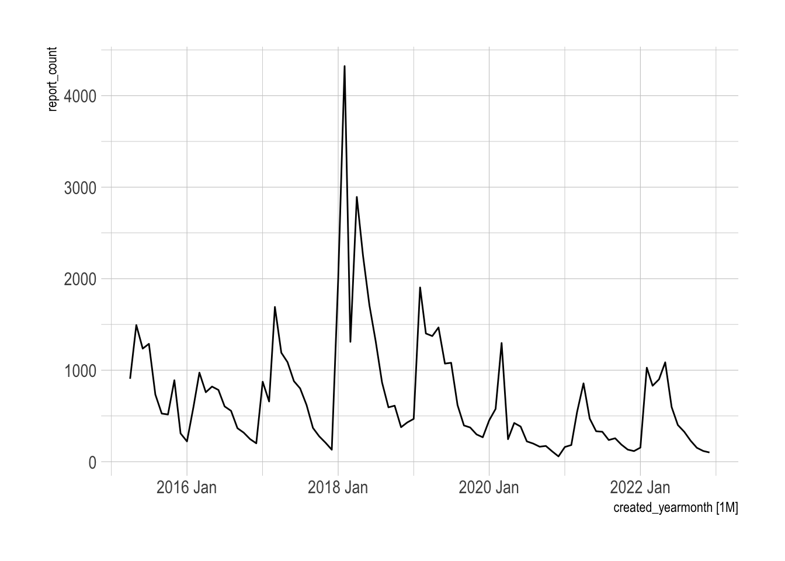
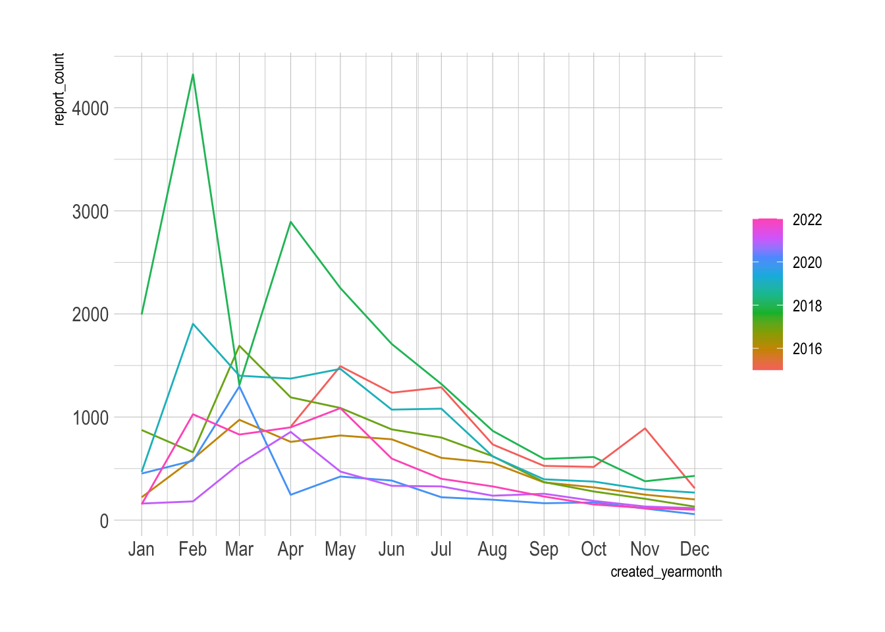
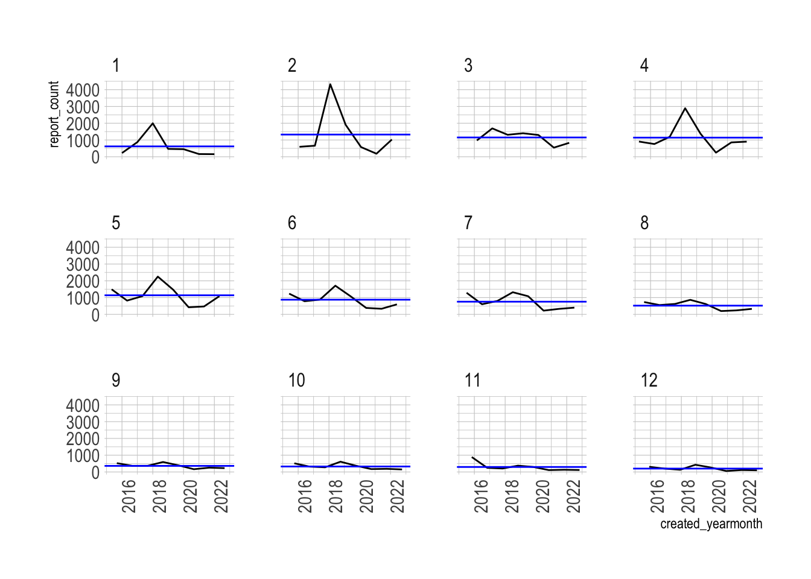
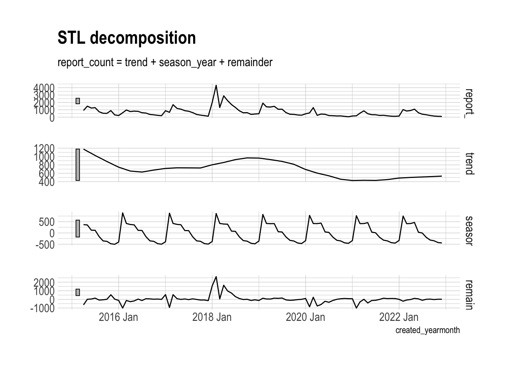
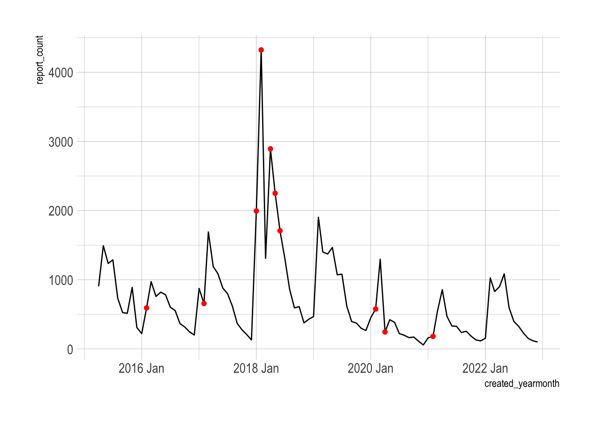
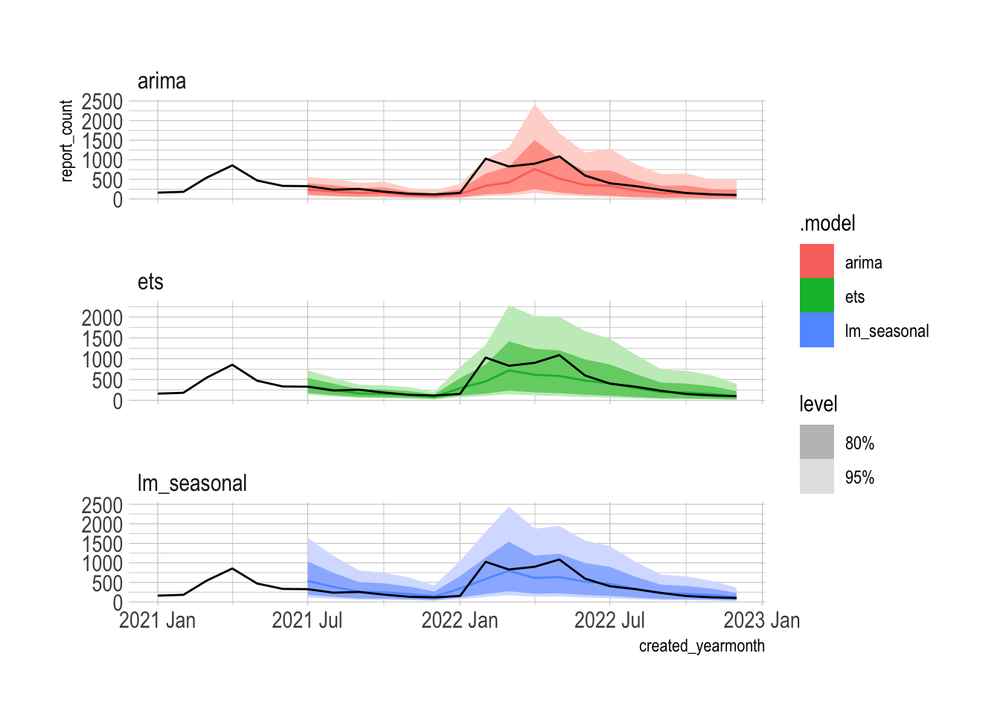
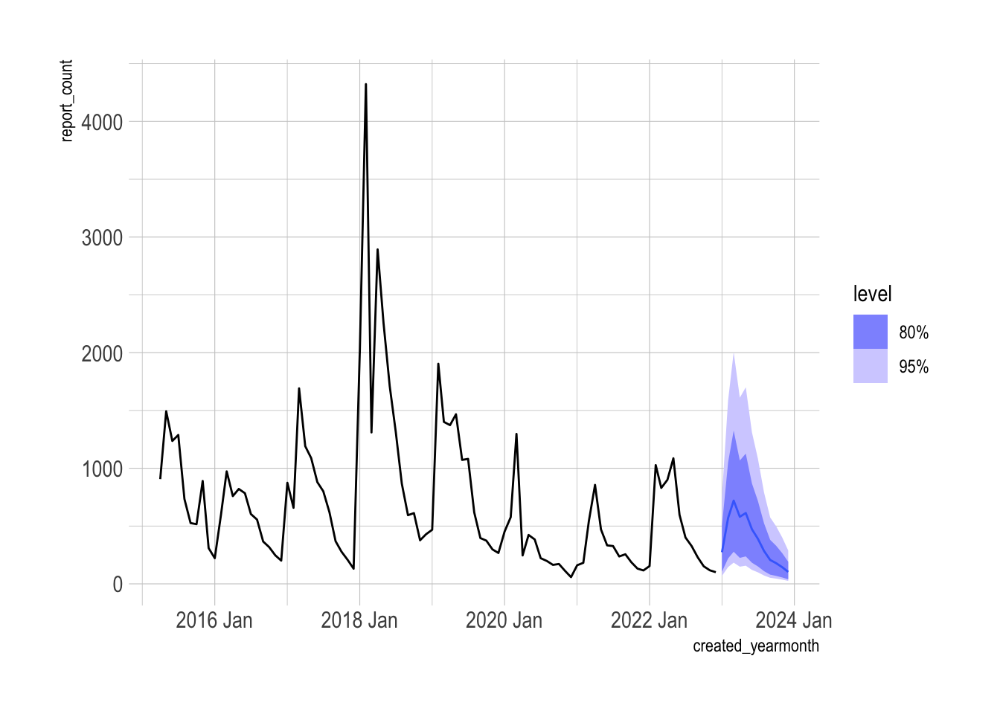
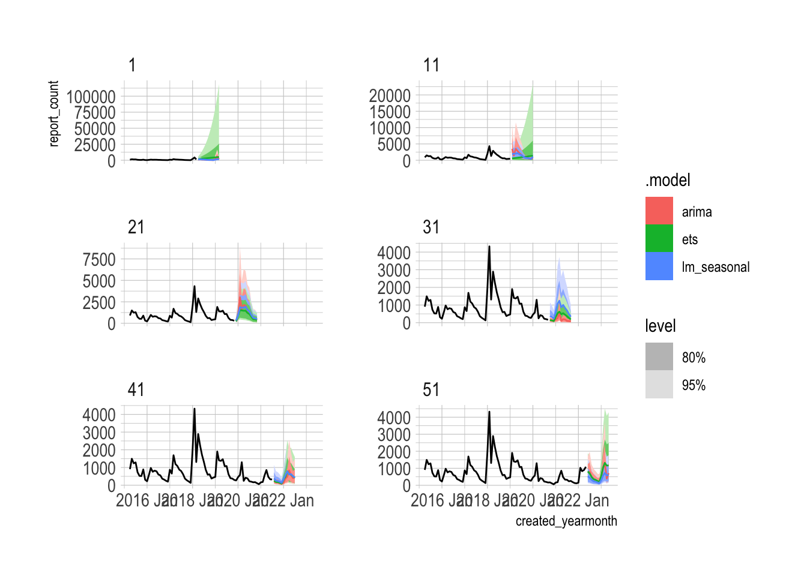

library(fpp3)
library(tidyverse)
library(janitor)
library(future)
library(hrbrthemes)
theme_set(theme_ipsum())
plan(multisession)
options(scipen = 999, digits = 4)Intro
Potholes are the bane of Pittsburgh drivers’ existence. You can either weave around the minefield of holes in the road (some of alarming size) or risk damage to your vehicle. Drastic swings in weather also exacerbate the natural freeze-thaw cycle. The winter of 2017/2018 was a particularly bad year for potholes in the region.
In this post I will use {fable} and related {tidyverts} packages to model the number of reports about potholes to Pittsburgh’s 311 service. The report data is available here.
EDA
Pothole data from 311
This code loads the relevant packages:
This code reads in CSV containing the 311 data and filters to only the pothole complaints.
#read in pothole data
pothole_data <- read_csv("post_data/wprdc_311.csv") |>
clean_names() |>
filter(request_type == "Potholes") |>
mutate(created_yearmonth = yearmonth(created_on))Next, summarize the data by year and month, and convert the data into a time series tsibble.
#create basic tsibble
pothole_df <- pothole_data |>
group_by(created_yearmonth, request_type) |>
summarize(report_count = n()) |>
ungroup() |>
as_tsibble()
pothole_df# A tsibble: 93 x 3 [1M]
created_yearmonth request_type report_count
<mth> <chr> <int>
1 2015 Apr Potholes 906
2 2015 May Potholes 1493
3 2015 Jun Potholes 1236
4 2015 Jul Potholes 1288
5 2015 Aug Potholes 734
6 2015 Sep Potholes 526
7 2015 Oct Potholes 516
8 2015 Nov Potholes 890
9 2015 Dec Potholes 309
10 2016 Jan Potholes 222
# ℹ 83 more rows{tidyverts} provides some out-of-the-box functions to visualize the time series data. This is an important step to understand the dynamics of the data.
autoplot(pothole_df)
gg_season(pothole_df)
gg_subseries(pothole_df) +
facet_wrap(vars(month(created_yearmonth)))
Decomposing a time series into components (trend, seasonality, remainder) gives a more detailed view into how the series behaves.
dcmp <- pothole_df |>
model(stl = STL(report_count, robust = TRUE))
dcmp_components <- components(dcmp)
dcmp_components# A dable: 93 x 7 [1M]
# Key: .model [1]
# : report_count = trend + season_year + remainder
.model created_yearmonth report_count trend season_year remainder
<chr> <mth> <int> <dbl> <dbl> <dbl>
1 stl 2015 Apr 906 1179. 369. -641.
2 stl 2015 May 1493 1128. 353. 11.9
3 stl 2015 Jun 1236 1077. 123. 36.7
4 stl 2015 Jul 1288 1026. 117. 145.
5 stl 2015 Aug 734 978. -160. -83.1
6 stl 2015 Sep 526 929. -353. -50.7
7 stl 2015 Oct 516 881. -374. 8.42
8 stl 2015 Nov 890 836. -480. 534.
9 stl 2015 Dec 309 791. -503. 21.5
10 stl 2016 Jan 222 746. -402. -122.
# ℹ 83 more rows
# ℹ 1 more variable: season_adjust <dbl>dcmp_components |>
autoplot()
You can use the remainders to look for outliers in the data.
outliers <- dcmp_components |>
filter(
remainder < quantile(remainder, 0.25) - 3*IQR(remainder) |
remainder > quantile(remainder, 0.75) + 3*IQR(remainder)
)
outliers |>
select(created_yearmonth, remainder)# A tsibble: 10 x 2 [1M]
created_yearmonth remainder
<mth> <dbl>
1 2016 Feb -1011.
2 2017 Feb -939.
3 2018 Jan 1572.
4 2018 Feb 2640.
5 2018 Apr 1641.
6 2018 May 982.
7 2018 Jun 726.
8 2020 Feb -863.
9 2020 Apr -772.
10 2021 Feb -1011.The winter of 2017/2018 clearly had many outliers.
pothole_df |>
ggplot(aes(created_yearmonth, report_count)) +
geom_line() +
geom_point(data = outliers, color = "red")
Train/test approach
The classic method for determining the accuracy of any model is to train the model on a subset of the data and test the model against another subset. This code splits the time series into 80% training and 20% testing sets.
#split into train/test and forecast
data_test <- pothole_df |>
slice_tail(prop = .2)
data_train <- pothole_df |>
anti_join(data_test, by = "created_yearmonth")I fit 3 models against the training set:
ARIMA
Exponential smoothing
Linear model with seasonal effects
I transform the data with log() and add 1 to the result to guarantee that the forecasts are positive. This is necessary because many of the observations are close to zero, and the models would not know otherwise that the count of pothole complaints cannot be negative. {fable} automatically back-transforms the forecast onto the original scale of the data.
model_df <- data_train |>
model(arima = ARIMA(log(report_count + 1)),
ets = ETS(log(report_count + 1)),
lm_seasonal = TSLM(log(report_count + 1) ~ trend() + season()))The forecast() function returns the full (transformed) distribution of the forecast and the mean of that distribution.
pothole_fc <- model_df |>
forecast(data_test)
pothole_fc# A fable: 54 x 5 [1M]
# Key: .model [3]
.model created_yearmonth report_count .mean request_type
<chr> <mth> <dist> <dbl> <chr>
1 arima 2021 Jul t(N(5.4, 0.25)) 237. Potholes
2 arima 2021 Aug t(N(5.1, 0.32)) 195. Potholes
3 arima 2021 Sep t(N(4.9, 0.34)) 151. Potholes
4 arima 2021 Oct t(N(4.9, 0.36)) 162. Potholes
5 arima 2021 Nov t(N(4.4, 0.38)) 98.0 Potholes
6 arima 2021 Dec t(N(4.2, 0.41)) 77.0 Potholes
7 arima 2022 Jan t(N(4.7, 0.43)) 129. Potholes
8 arima 2022 Feb t(N(5.6, 0.45)) 335. Potholes
9 arima 2022 Mar t(N(5.8, 0.47)) 423. Potholes
10 arima 2022 Apr t(N(6.4, 0.49)) 764. Potholes
# ℹ 44 more rows{fabletools} provides many measures of forecast accuracy. I focus on the following:
CPRS (skill score): CPRS measures how well the forecast distribution fits the test data. The
skill_scorefunction compares this to the CPRS of a naive model. This results in a measure how much accuracy the model is adding over a naive model.RMSE: Root Mean Squared Error
fc_acc <- pothole_fc |>
accuracy(pothole_df,
measures = list(point_accuracy_measures, distribution_accuracy_measures, skill_cprs = skill_score(CRPS))) |>
select(.model, .type, skill_cprs, RMSE) |>
arrange(desc(skill_cprs))
fc_acc# A tibble: 3 × 4
.model .type skill_cprs RMSE
<chr> <chr> <dbl> <dbl>
1 lm_seasonal Test 0.616 183.
2 ets Test 0.585 200.
3 arima Test 0.486 246.The lm_seasonal model provides the most accurate distribution and average forecast.
The autoplot function automatically extracts the 80% and 95% prediction intervals from the forecast distribution. You can see that the 80% interval of the lm_seasonal model fully contains the actual observations.
pothole_fc |>
autoplot(pothole_df |>
filter(year(created_yearmonth) >= 2021)) +
facet_wrap(vars(.model), scales = "free_y", ncol = 1)
The report function provides the details of the specified model:
model_df |>
select(lm_seasonal) |>
report()Series: report_count
Model: TSLM
Transformation: log(report_count + 1)
Residuals:
Min 1Q Median 3Q Max
-1.1790 -0.4089 -0.0561 0.3659 1.5638
Coefficients:
Estimate Std. Error t value Pr(>|t|)
(Intercept) 6.71860 0.28196 23.83 < 0.0000000000000002 ***
trend() -0.01324 0.00328 -4.04 0.00015 ***
season()year2 0.55293 0.35301 1.57 0.12237
season()year3 0.87219 0.35306 2.47 0.01626 *
season()year4 0.62630 0.34030 1.84 0.07049 .
season()year5 0.67473 0.34022 1.98 0.05178 .
season()year6 0.47684 0.34017 1.40 0.16597
season()year7 0.37048 0.35355 1.05 0.29876
season()year8 0.05145 0.35338 0.15 0.88472
season()year9 -0.31460 0.35324 -0.89 0.37659
season()year10 -0.37161 0.35314 -1.05 0.29674
season()year11 -0.54787 0.35306 -1.55 0.12581
season()year12 -0.92564 0.35301 -2.62 0.01098 *
---
Signif. codes: 0 '***' 0.001 '**' 0.01 '*' 0.05 '.' 0.1 ' ' 1
Residual standard error: 0.611 on 62 degrees of freedom
Multiple R-squared: 0.54, Adjusted R-squared: 0.451
F-statistic: 6.08 on 12 and 62 DF, p-value: 0.00000068This code refits the lm_seasonal model against the entire pothole_df dataset and produces a true forecast with a 12 month horizon. The distribution reflects the uncertainty from the variation in previous years. The model forecasts that the overall downward trend will continue.
final_model <- model_df |>
select(lm_seasonal) |>
refit(pothole_df, reestimate = TRUE)
final_model |>
forecast(h = 12) |>
autoplot(pothole_df)
Cross-validation approach
Cross-validation is the more robust way to measure the accuracy of a model. Instead of splitting the data into train/test sets, I create multiple subsets of the data with increasing origin points. This code creates the CV set by starting with the first 36 observations and adding 1 observation at a time to the rolling origin.
pothole_cv <- stretch_tsibble(pothole_df, .step = 1, .init = 36) |>
relocate(created_yearmonth, .id)
pothole_cv# A tsibble: 3,741 x 4 [1M]
# Key: .id [58]
created_yearmonth .id request_type report_count
<mth> <int> <chr> <int>
1 2015 Apr 1 Potholes 906
2 2015 May 1 Potholes 1493
3 2015 Jun 1 Potholes 1236
4 2015 Jul 1 Potholes 1288
5 2015 Aug 1 Potholes 734
6 2015 Sep 1 Potholes 526
7 2015 Oct 1 Potholes 516
8 2015 Nov 1 Potholes 890
9 2015 Dec 1 Potholes 309
10 2016 Jan 1 Potholes 222
# ℹ 3,731 more rowsEach CV .id contains one more observation than the previous .id.
pothole_cv |>
count(.id)# A tibble: 58 × 2
.id n
<int> <int>
1 1 36
2 2 37
3 3 38
4 4 39
5 5 40
6 6 41
7 7 42
8 8 43
9 9 44
10 10 45
# ℹ 48 more rowsThis code refits the models against the cross-validation set. The {fable} package automatically finds the appropriate model parameters for ARIMA and ETS models. Since each .id has a different subset of the data, the model parameters can be different for each .id.
models_cv <- pothole_cv |>
model(arima = ARIMA(log(report_count + 1)),
ets = ETS(log(report_count + 1)),
lm_seasonal = TSLM(log(report_count + 1) ~ trend() + season()))
models_cv# A mable: 58 x 4
# Key: .id [58]
.id arima ets lm_seasonal
<int> <model> <model> <model>
1 1 <ARIMA(0,0,1)(0,1,0)[12]> <ETS(A,N,N)> <TSLM>
2 2 <ARIMA(0,1,1)(0,1,0)[12]> <ETS(A,N,N)> <TSLM>
3 3 <ARIMA(0,1,1)(0,1,0)[12]> <ETS(A,N,N)> <TSLM>
4 4 <ARIMA(0,1,1)(0,1,0)[12]> <ETS(A,N,N)> <TSLM>
5 5 <ARIMA(0,1,1)(0,1,0)[12]> <ETS(A,N,N)> <TSLM>
6 6 <ARIMA(0,1,1)(0,1,0)[12]> <ETS(A,N,N)> <TSLM>
7 7 <ARIMA(0,1,1)(1,1,0)[12]> <ETS(A,N,N)> <TSLM>
8 8 <ARIMA(0,1,1)(1,1,0)[12]> <ETS(A,N,N)> <TSLM>
9 9 <ARIMA(0,1,1)(1,1,0)[12]> <ETS(A,N,N)> <TSLM>
10 10 <ARIMA(0,1,1)(0,1,0)[12]> <ETS(A,N,N)> <TSLM>
# ℹ 48 more rowsNext we forecast for each model and .id with a 12 month horizon.
forecast_cv <- models_cv |>
forecast(h = 12)
forecast_cv# A fable: 2,088 x 5 [1M]
# Key: .id, .model [174]
.id .model created_yearmonth report_count .mean
<int> <chr> <mth> <dist> <dbl>
1 1 arima 2018 Apr t(N(6.7, 0.4)) 955.
2 1 arima 2018 May t(N(7, 0.47)) 1347.
3 1 arima 2018 Jun t(N(6.8, 0.47)) 1089.
4 1 arima 2018 Jul t(N(6.7, 0.47)) 991.
5 1 arima 2018 Aug t(N(6.4, 0.47)) 767.
6 1 arima 2018 Sep t(N(5.9, 0.47)) 457.
7 1 arima 2018 Oct t(N(5.6, 0.47)) 344.
8 1 arima 2018 Nov t(N(5.3, 0.47)) 256.
9 1 arima 2018 Dec t(N(4.9, 0.47)) 162.
10 1 arima 2019 Jan t(N(7.6, 0.47)) 2469.
# ℹ 2,078 more rowsYou can see that each .id gains one observation, and the model forecasts reflect that difference. This code graphs every 10th .id.
forecast_cv |>
filter(.id %in% seq(min(.id), max(.id), 10)) |>
autoplot(pothole_cv) +
facet_wrap(vars(.id), ncol = 2, scales = "free_y")
The forecast accuracy for each model is averaged across all the .ids. This gives a more robust estimation of accuracy.
cv_acc <- forecast_cv |>
accuracy(pothole_df, measures = list(point_accuracy_measures, distribution_accuracy_measures, skill_cprs = skill_score(CRPS))) |>
select(.model, .type, skill_cprs, RMSE) |>
arrange(desc(skill_cprs))
cv_acc |>
arrange(desc(skill_cprs))# A tibble: 3 × 4
.model .type skill_cprs RMSE
<chr> <chr> <dbl> <dbl>
1 lm_seasonal Test 0.716 592.
2 ets Test 0.622 1347.
3 arima Test 0.465 1958.On average, the lm_seasonal model provides more accurate forecasts.
The basic models have higher CV accuracy than ARIMA, which probably shows that the more complicated ARIMA model over-fits the training data.
fc_acc |>
mutate(type = "train_test") |>
bind_rows(cv_acc |>
mutate(type = "cv")) |>
select(.model, type, skill_cprs) |>
pivot_wider(names_from = type, values_from = skill_cprs)# A tibble: 3 × 3
.model train_test cv
<chr> <dbl> <dbl>
1 lm_seasonal 0.616 0.716
2 ets 0.585 0.622
3 arima 0.486 0.465sessionInfo()R version 4.4.1 (2024-06-14)
Platform: x86_64-apple-darwin20
Running under: macOS 15.1.1
Matrix products: default
BLAS: /Library/Frameworks/R.framework/Versions/4.4-x86_64/Resources/lib/libRblas.0.dylib
LAPACK: /Library/Frameworks/R.framework/Versions/4.4-x86_64/Resources/lib/libRlapack.dylib; LAPACK version 3.12.0
locale:
[1] en_US.UTF-8/en_US.UTF-8/en_US.UTF-8/C/en_US.UTF-8/en_US.UTF-8
time zone: America/New_York
tzcode source: internal
attached base packages:
[1] stats graphics grDevices datasets utils methods base
other attached packages:
[1] hrbrthemes_0.8.7 future_1.34.0 janitor_2.2.0 forcats_1.0.0
[5] stringr_1.5.1 purrr_1.0.2 readr_2.1.5 tidyverse_2.0.0
[9] fable_0.4.1 feasts_0.4.1 fabletools_0.5.0 tsibbledata_0.4.1
[13] tsibble_1.1.5 ggplot2_3.5.1 lubridate_1.9.3 tidyr_1.3.1
[17] dplyr_1.1.4 tibble_3.2.1 fpp3_1.0.1
loaded via a namespace (and not attached):
[1] gtable_0.3.5 anytime_0.3.9 xfun_0.49
[4] htmlwidgets_1.6.4 numDeriv_2016.8-1.1 tzdb_0.4.0
[7] vctrs_0.6.5 tools_4.4.1 generics_0.1.3
[10] parallel_4.4.1 fansi_1.0.6 pkgconfig_2.0.3
[13] distributional_0.5.0 lifecycle_1.0.4 farver_2.1.2
[16] compiler_4.4.1 munsell_0.5.1 codetools_0.2-20
[19] snakecase_0.11.1 fontLiberation_0.1.0 fontquiver_0.2.1
[22] htmltools_0.5.8.1 yaml_2.3.10 Rttf2pt1_1.3.12
[25] pillar_1.9.0 crayon_1.5.3 extrafontdb_1.0
[28] ellipsis_0.3.2 fontBitstreamVera_0.1.1 parallelly_1.38.0
[31] tidyselect_1.2.1 digest_0.6.37 stringi_1.8.4
[34] listenv_0.9.1 labeling_0.4.3 extrafont_0.19
[37] fastmap_1.2.0 grid_4.4.1 colorspace_2.1-1
[40] cli_3.6.3 magrittr_2.0.3 utf8_1.2.4
[43] future.apply_1.11.2 withr_3.0.1 gdtools_0.4.0
[46] scales_1.3.0 rappdirs_0.3.3 bit64_4.0.5
[49] timechange_0.3.0 rmarkdown_2.28 globals_0.16.3
[52] bit_4.0.5 progressr_0.14.0 hms_1.1.3
[55] evaluate_0.24.0 knitr_1.48 ggdist_3.3.2
[58] rlang_1.1.4 Rcpp_1.0.13 glue_1.8.0
[61] renv_1.0.11 vroom_1.6.5 rstudioapi_0.16.0
[64] jsonlite_1.8.8 R6_2.5.1 systemfonts_1.1.0